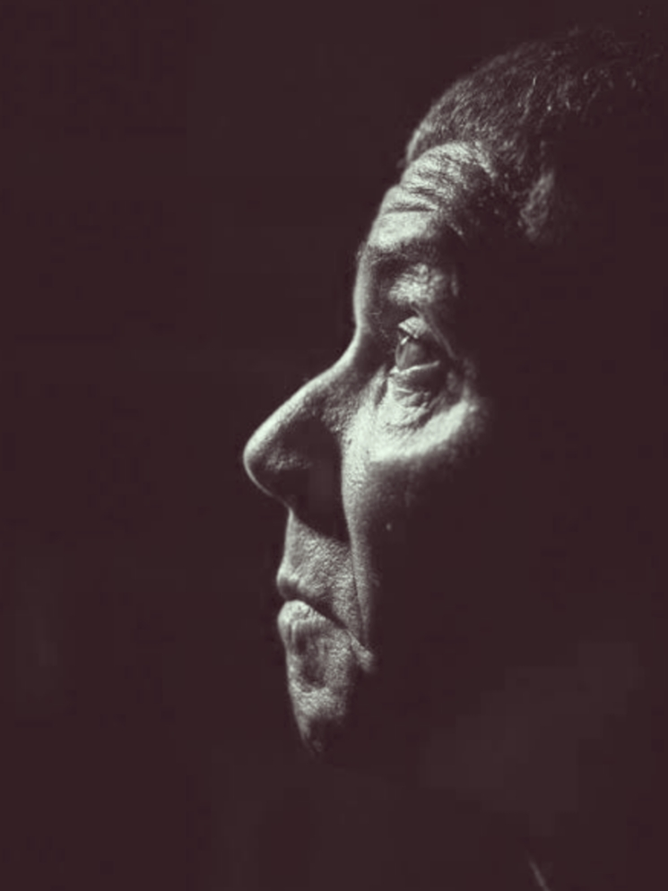
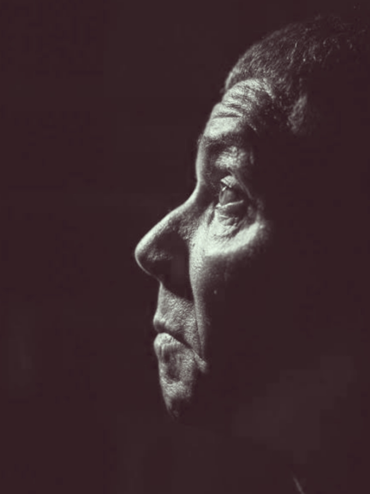

Pedrinho Matador foi preso pela primeira vez em 1973 e passou 42 anos na cadeia. Em uma entrevista para a revista "Época", de 2003, Rodrigues Filho disse que teria matado mais de cem pessoas, incluindo crimes cometidos dentro do sistema prisional.
Pedro Rodrigues Filho, o Pedrinho Matador, foi assassinado a tiros e teve o pescoço cortado, de acordo com o boletim de ocorrência. O assassino em série, de 68 anos, foi morto na calçada em frente à casa de familiares na manhã deste domingo (5), em Mogi das Cruzes, na Grande São Paulo.
Pedrinho Matador, serial killer mineiro que matou mais de cem.
Veja mais detalhes sobre a morte